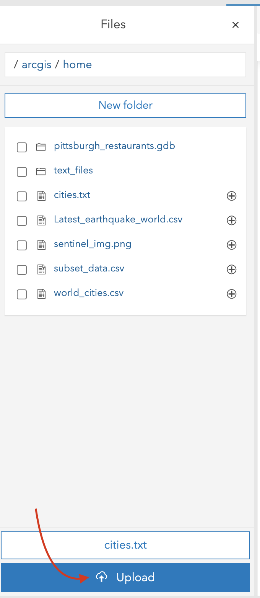
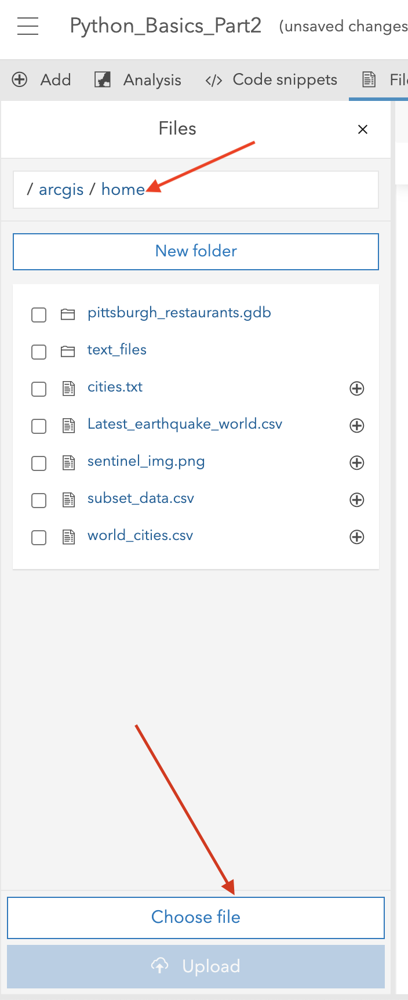

Lab No 3: Python Basics - Part 2
Introduction
We will now discuss additional components of the Python language including functions, flow control, loops, modules, and reading/writing data from disk. It is important you learn effective ways to make your code efficient, as python can be memory-consuming, but at the same time learn how to create Loops, and flow control will help to run tasks in an automatic ways making your scripts a powerful tool.
If you have some experience with this type of conditions or components from your previous courses with R, you will see that the logic is the same. Reading and writing files using python is also a key skill to learn, as in most of the cases you will need to access files, or folders where your spatial data is located.
Please go through every cell, reading carefully all descriptions and run the code cell to see the examples, you later might want to use this notebook to recall how to create the following components:
Content
- Define and use functions.
- Use If…Else statements, While Loops, and For Loops.
- Describe and interpret classes and methods.
- Access and use modules and libraries.
- Work with local files and directories.
- Use f-strings and list comprehension.
If you need more information or examples Here it is a great resource w3school.com.
2. Functions
Functions are probably one of the key components in any programming language, Functions do something when called. You can think of those as tools. Methods, which we will discuss in more detail later in this notebook, are like functions except that they are tied to a specific object.
When creating a new class, you can define methods specific to the new class. Functions generally have the following generic syntax:
output = function(Parameter1, Parameter2). #Think of parameters as Inputs., so you have output = function(Input1, Input2)In contrast, methods will have the following generic syntax:
output = object.method(Parameter1, Parameter2). Below, You are generating a simple function that multiplies two numbers together.
The def keyword is used when defining a function. Within the parenthesis, a list of parameters, which are often specific inputs or required settings, can be provided.
In the below example, the function accepts two parameters: *a* and *b*. On the next line, indented, and after the colon, what the function does is defined. In this case, the function simply returns the product of the two values. The **return** keyword is used to define the output of the function (or what is returned), in this case the product of the two provided values.Once a function is created, it can be used. In Example 1, You will see two arguments, or values assigned to the parameters, and save the result to a variable x.
Then when using a function, it is also possible to provide the arguments as key and value pairs, as in Example 2.
When creating a function, default arguments can be provided for parameters when the function is defined. If arguments are not provided when the function is used, then the default values will be used, as demonstrated in Example 3.
2.1 Indentation
This is a good time to stop and describe indentation.
Python makes use of whitespace, indentations, or tabs to denote or interpret units of code. This is uncommon, as most other languages use brackets or punctuation of some kind. So, it is important to properly use indentations or your code will fail to execute correctly or at all.
#Example 1
def multab(a,b):
return a*b
x = multab(3,6)
print(x)
#Example 2
x = multab(a=5, b=3)
print(x)
#Example 3
def multab(a=1,b=1):
return a*b
x = multab()
print(x)Challenge 2.1
In the next code cell, create a function that transform the distance in miles to kilometers between London and Edinburgh. Try no to google or use ChatGPT for this challenge, as those will provide more advance suggestion, you will only need the previous cell description to run this challenge.
2.2 Options *args and **kwargs for functions
There are a few other options when defining functions that increase flexibility. For example, what if you wanted to edit the function created above so that it can accept more than two arguments and so that the number of arguments can vary? This can be accomplished using either *args or **kwargs.
*args:
A single asterisk (*) is used to unpack an iterable, such as a list, whereas two asterisks (**) are used to unpack a dictionary. Using *args allows you to to provide a variable number of non-keyword arguments (or, each argument does not need to be assigned a key). In contrast, **kwargs is used to provide a variable number of keyword arguments (or, each argument must have a key).
In the first example below, You altered the function from above to accept two or more arguments.
Within the function, later you define a variable x1 that initially assigned a value of 1. Then, inside of a for loop, which will be discussed later, you iteratively multiply x1 by the next provided value. To test the function, a feed it the values 1 through 5 as non-keyword arguments.
The result is calculated as 1x1 –> 1x2 –> 2x3 –> 6x4 –> 24x5 –> 120.
Note that the single asterisk is key here. The work “args” could be replaced with another term, as the second part of the example demonstrates. What is important is that * is used to unpack an iterable.
# Example 1
def multab(*args):
x1 = 1
for a in args:
x1 *= a
return x1
x = multab(1, 2, 3, 4, 5)
print(x)
#Example 2
def multab(*nums):
x1 = 1
for a in nums:
x1 *= a
return x1
x = multab(1, 2, 3, 4, 5)
print(x) **kwargs:
The next example demonstrates the use of **kwargs. Here, the arguments must have keys. Again, what is important here is the use of ** to unpack a dictionary: “kwargs” can be replaced with another term. Note the use of the .values() method for a dictionary. This allows access to the values as opposed to the associated keys.
def multab(**kwargs):
x1 = 1
for a in kwargs.values():
x1 *= a
return x1
x = multab(a=1, b=2, c=3, d=4, e=5)
print(x)
def multab(**nums):
x1 = 1
for a in nums.values():
x1 *= a
return x1
x = multab(a=1, b=2, c=3, d=4, e=5)
print(x)The next cell demonstrates the use of the single asterisk to unpack an iterable, in this case a list. Each element in the list is returned separately as opposed to as a single list object. This is the same functionality implemented by *args.
x = [2,3,4,5]
print(*x)Lastly, it is possible to use both *args and **kwargs in the same function.#
However, *args must be provided before **kwargs. In the example below, the parameter a is provided an argument of 1 while the parameter b is provided an argument of 2. 3 would be associated with *args, since it is not assigned a key, while 4 and 5 would be associated with **kwargs since they are assigned a key.
# Create a function
def multab(a=2, b=2, *args, **kwargs):
x1 = 1 #Define variables
x1 *= a
x1 *= b
if args: # Conditional
for arg in args: #Loop
x1 *= arg
if kwargs:
for kwarg in kwargs.values():
x1 *= kwarg
return x1
x = multab(1, 2, 3, c=3, d=4)
print(x)
# Read description below to understand how this function works, looks more complicated than actually it is.As the examples above demonstrate, *args and **kwargs increase the flexibility of functions in Python by allowing for variable numbers of arguments. Even if you do not make use of these options, they are important to understand, as many functions that you encounter will make use of them. So, knowledge of this functionality will aid you in understanding how to implement specific functions and interpret the associated documentation.
NOTE:
The following options will you give an additional level of skill in Python. Although they are rarely included in python basics, we consider that if you can master those, you will have an extra level of expertise and will definitely help you to make more efficient programs using python.
2.3 Lambda
A lambda function is a special function case that is generally used for simple functions that can be anonymous or not named. They can accepted multiple arguments but can only include one expression. Lambda functions are commonly used inside of other functions.
lam1 = lambda a, b, c: str(a) + " " + str(b) + " " + str(c)
print(lam1("Geospatial", "Data", "Science"))
a = "Geospatial"
b = "Dasta"
c = "Science"2. Scope
Variables are said to have global scope if they can be accessed anywhere in the code.
In contrast, local scope implies that variables are only accessible in portions of the code.
For example, by default new variables defined within a function cannot be called or used outside of the function. If you need to specify a variable within a function as having global scope, the global keyword can be used.
In the first example below, the variables xG, yG, and z have global scope, so can be called and used outside of the function. In contrast, variables xL and yL have local scope and are not available outside of the function. If you attempt to run the last line of code, which is commented out, you will get an error.
xG = 2
yG = 3
def Func1(a, b):
xL = a*a
yL = b*b
return xL + yL
z = Func1(xG, yG)
print(xG)
print(z)
#print(xL+3) will not work due to local scopeIf you need a variable declared inside of a function to have global scope, you can use the global keyword as demonstrated below.
xG = 2
yG = 3
def Func1(a, b):
global xL
xL = a*a
global yL
yL = b*b
return xL + yL
z = Func1(xG, yG)
print(xG)
print(z)
print(xL+3)3. Pass
It is not possible to leave a function empty when it is defined. As you develop code, you can make use of the pass keyword as a placeholder before adding content to a function. This will allow you to work with your code without errors until you complete the content within the function. pass can also be used within incomplete class definitions and loops.
def multab(x, y):
passConditionals - Control Flow
1. If…Else
All coding languages allow for control flow in which different code is executed depending on a condition.
If…Else statements are a key component of how this is implemented. Using logical conditions that evaluate to True or False, it is possible to program different outcomes. Think about this as the rules, if something is True, then do this, but if something is False, then do that.
The first example uses only if. So, if the condition evaluates to True, the remaining code will be executed. If it evaluates to False then nothing is executed or returned. In this case, the condition evaluates to True, so the text is printed.
Again, remember that indentation is very important in Python. The content of the if statement must be indented or the code will fail.
x = 7
if x > 6:
print(str(x) + " is greater than 6.")It is common to have a default statement that is executed if the condition evaluates to False as opposed to simply doing nothing. This is the use of an else statement. No condition is required for the else statement since it will be executed for any case where the if condition evaluates to False. Again, note the required indentation.
x = 3
if x > 6:
print(str(x) + " is greater than 6.")
else:
print(str(x) + " is less than or equal to 6.")What if you want to evaluate against more than one condition? This can be accomplished by incorporating one or multiple elif statements. The code associated with the else statement will only be executed if the if and all elif statements evaluate to False.
All statements should be mutually exclusive or non-overlapping so that the logic is clear. In the second example, I have changed the first condition to x >= 6, so now the condition in the if and elif statements overlap. When the code is executed, the result from the if statement is returned. Since the first condition evaluated to True, the associated code was executed and the elif and else statements were ignored. If I swap the if and elif conditions, a different result is obtained. So, the order matters. In short, this ambiguity can be avoided by using conditions that are mutually exclusive and non-overlapping.
x = 6
if x > 6:
print(str(x) + " is greater than 6.")
elif x == 6:
print(str(x) + " is equal to 6.")
else:
print(str(x) + " is less than 6.")x = 6
if x >= 6:
print(str(x) + " is greater than 6.")
elif x == 6:
print(str(x) + " is equal to 6.")
else:
print(str(x) + " is less than 6.")
x = 6
if x == 6:
print(str(x) + " is equal to 6.")
elif x >= 6:
print(str(x) + " is greater than 6.")
else:
print(str(x) + " is less than 6.")2. While Loop
While loops are used to loop code as long as a condition evaluates to True. In the example below, a variable i is initially set to 14.
The loop executes as long as i remains larger than 7. At the end of each loop the -= assignment operator is used to subtract 1 from i. Also, i is simply a variable, so you do not need to use i specifically. For example, i could be replaced with x.
Please consider the following, One potential issue with a while loop is the possibility of an infinite loop in which the loop never stops because the condition never evaluates to False. For example, if I change the assignment operator to +=, the condition will continue to evaluate to True indefinitely.
i = 14
while i > 7:
print(i)
i -= 13. For Loop
For Loops will execute code for all items in a sequence. For loops make use of data types that are iterable, or that can return each individual element in the data object sequentially (for example, each string element in a list). Data types that are iterable include lists, tuples, strings, dictionaries, and sets.
In the first example below, a for loop is being used to print every value in a list. In the next example, each character in a string is printed sequentially. Both lists and strings are iterable, so can be looped over.
lst1 = [3, 6, 8, 9, 11, 13]
for i in lst1:
print("Value is: " + str(i))str1 = "Remote Sensing"
for c in str1:
print(c)Combining a for loop and If…Else statements allows for different code to be executed for each element in a sequence or iterable, such as a list, based on conditions, as demonstrated in the code below. In later modules, you will see example use cases for working with and analyzing spatial data. Note the levels of indentation used, which, again, are very important and required when coding in Python. The content in the for loop is indented with one tab while the content within the if, elif, and else statements, which are include in the for loop, are indented with two tabs.
lst1 = [3, 6, 8, 9, 11, 13]
for i in lst1:
if i < 8:
print(str(i) + " is less than 8.")
elif i == 8:
print(str(i) + " is equal to 8.")
else:
print(str(i) + " is greater than 8.")The range() function is commonly used in combination with for loops. Specifically, it is used to define an index for each element in an iterable that can then be used within the loop.
In the example below, range() is used to define indices for all elements in a list. The len() function returns the length, so the returned indices will be 0 through the length of the list, in this case 4. The for loop will iterate over indices 0 through 3 (the last index is not included). This allows for the index to be used within the loop. In the example, the index is used to extract each element from the list and save it to a new local variable (country), which is then provided to a print statement.
countries = ["Belgium", "Mexico", "Italy", "India"]
for i in range(len(countries)):
country = countries[i]
print("I would like to visit " + country + ".")Another function that is commonly used in combination with for loops is enumerate(). For each element in the iterable, enumerate() will return an index and the element. Both can then be used within the loop.
In the first example below, enumerate() is used to create an index and extract each element in the list sequentially. In this case, the enumeration is not necessary, since the index is not needed. However, in the next example, the index is used to print different results depending on whether the index is even or odd. So, enumerate() is needed because I need access to both the index and the data element within the loop.
countries = ["Belgium", "Mexico", "Italy", "India"]
for index, country in enumerate(countries):
print("I would like to visit " + country + ".")countries = ["Belgium", "Mexico", "Italy", "India"]
for index, country in enumerate(countries):
if index%2 == 0:
print("I would like to visit " + country + ".")
else:
print("I would not like to visit " + country + ".")There are some other useful techniques for flow control, code development, and error handling that we will not discuss in detail here. For example, try, except, and finally can be used to to handle errors and provide error messages. break is used to terminate a for loop based on a condition. continue can be used to skip the remaining steps in an iteration and move on to the next iteration in a loop.
List Comprehension - Great Feature from Python!
List comprehension is a nice feature in Python.
This technique allows you to create a new list from elements in an existing list and offers more concise syntax than accomplishing the same task using a for loop.
In the first example, You will see that we use a list comprehension to return each element (c) in lst1 to a new lst, lst2, if the string starts with the letter “B”. Here is how you would read the syntax within the square brackets:
- “Return the element (c) from the list (lst1) if its first character is”B”.
In the second example, no condition is used. Instead, you are concatenating “I would like to visit” to each country and returning each result as an element in a new list.
You will see examples of list comprehension in later modules. It is a very handy technique.
# Example 1
lst1 = ["Belgium", "Mexico", "Italy", "India", "Bulgaria", "Belarus"]
lst2 = [c for c in lst1 if c[0] == "B"]
print(lst2)# Example 2
lst1 = ["Belgium", "Mexico", "Italy", "India", "Bulgaria", "Belarus"]
lst2 = ["I would like to visit " + c for c in lst1]
print(lst2)Classes
We briefly covered classes in the previous notebook. Here, we will provide a more in-depth discussion.
Since Python is an object-based language, it is important to be able to define different types of objects. Classes serve as blueprints for creating new types of objects. Thus, the concept, use, and application of classes is very important in Python.
To create a new class, you must use the class keyword. In the following example, you are generating a new class called Course. To construct a class, you must use the __init__() function. Within this function, you can assign values to object properties, and __init__() will be executed any time a new instance of the class is created. When You create an instance of my Course class, three properties will be initiated: the subject code, course number, and **course name*.
self references the current instance of the class. Although you can use a term other than self, self is the standard term used. Regardless of the term used, it must be the first parameter in __init__().
After the __init__() function, you then define a method that will be associated with the class. This method, printCourse(), will print the course name. Again, methods are functions that are associated with an object or class.
In order to use the method, You must first create an instance of the class and provide arguments for the required parameters. You can then apply the method to the instance to print the course info.
Once an instance of a class is created, the arguments assigned to properties can be changed using the following generic syntax: instance.property = new argument. Here you are changing the number parameter of the x instance of the Course class to 350. and then use my printCourse() method again.
class Course:
def __init__(self, subject, number, name):
self.subject = subject
self.number = number
self.name = name
def printCourse(self):
print("Course is " + self.subject + ": " + self.name + " with the code: " + str(self.number))
x = Course("Spatial Analysys", 33209, "Using Python")
x.printCourse()
type(x)
x.number = 350
x.printCourse()Once a class is created, subclassess can be derived from it. By default, subclasses will take on the properties and methods of the parent or superclass. However, you can alter or add properties and methods. This allows you to start with a more generic blueprint and refine it for a specific use case, as opposed to building a new class from scratch.
In the example below, I have redefined the Course class then subclassed it to create the Undergrad class. I have added a parameter, which requires redefining the __init__() function. The super() function returns all of the parameters and methods of the parent class. The use of super() provides control over what is inherited by the child class from the parent. We will not explore all possible use cases here. I then define a new method called printCourse2().
Once an instance of the Undergrad class is created, I can use both methods, since the printCourse() method was inherited from the parent class.
class Course:
def __init__(self, subject, number, name):
self.subject = subject
self.number = number
self.name = name
def printCourse(self):
print("Course is " + self.subject + " " + self.name + ", Code: "+ str(self.number))
class Undergrad(Course):
def __init__(self, subject, number, name, level):
super().__init__(subject, number, name)
self.level = level
def printCourse2(self):
print("Undergrad Course is " + self.subject + " " + self.name + ". " + "Must be a " + self.level + " to take this course.")
x = Undergrad("Spatial Analysys", 3209, "With Python", "for New students")
x.printCourse()
x.printCourse2()You will not be required to created classes and subclasses in this course. However, it is important to understand this functionality of Python for making use of modules and libraries, as this is used extensively. For example, the PyTorch library, which is used for deep learning, makes extensive use of classes, and using it will require subclassing available classes.
Math Module
The functionality of Python is expanded using modules. Modules represent sets of code and tools and are combined into libraries. In this class, we will explore several modules or libraries used for data science including NumPy, Pandas, matplotlib, and scikit-learn. We will also explore libraries for geospatial data analysis including GeoPandas and Rasterio.
As an introduction to modules and libraries, we will now explore the math module. To use a module, it first needs to be imported. You can then use the methods provided by the module. When using a method from the math module, you must include the module name as demonstrated below.
import math
x = 4.318
print(math.cos(x))
print(math.sin(x))
print(math.tan(x))
print(math.sqrt(x))
print(math.log10(x))
print(math.floor(x))You can also provide an alias or shorthand name for the module when importing it by using the as keyword. This can be used to simplify code.
import math as m
x = 4.318
print(m.cos(x))
print(m.sin(x))
print(m.tan(x))
print(m.sqrt(x))
print(m.log10(x))
print(m.floor(x))If you want to import each individual function from a module and not need to use the module name or alias name in your code, you can use the import syntax demonstrated below. This is generally best to avoid, especially if the module is large and/or has many functions.
from math import *
x = 4.318
print(cos(x))
print(sin(x))
print(tan(x))
print(sqrt(x))
print(log10(x))
print(floor(x))You can also import individual functions or subsets of functions as opposed to the entire module.
from math import cos, sin
x = 4.318
print(cos(x))
print(sin(x))Working with Files
1. Read Files
As a data scientist or geospatial data scientist, you need to use Python to work with and analyze files on your local machine.
First, a file or folder path can be assigned to a variable. On a Windows machine, you will need to either:
- Change the backslashes to forward slashes or
- Use the backslash escape character ahead of any backslash.
This is tricky depending of the operating system.
txt1 = "D:/data/text_files/t1.txt" #Must change backslash to forward slash
txt1 = "D:\\data\\text_files\\t1.txt" #Or, use the backslash escape characterFor the following instructions you need to upload certain datasets to your Cloud GIS. In case you are working locally, the workflow is similar, you need to provide the appropriate path. For now we will upload the data into you Cloud GIS, so you can read it using the notebook hosted in ArcGIS Online.
In this Notebook, click in Files.

Download the data folder from Moodle, then click in home, then click in Choose file and select cities.txt

Once you have chosen the file, then name will appear to confirm, now clic Upload.
Now you have the cities.txt in your portal and now you can call the call., if you click in the plus symbol you will get a new cell from ArcGIS Notebook to help you to understand what is the correct way to call this dataset. For future instructions make your you have uploaded the required dataset, from Data folder included in Moodle.
To read a text file you can just use the module with, like this:
with open('/arcgis/home/cities.txt', "r") as f:
contents = f.read()
print(contents)In the following example, we first import the csv module, which provides functionality for working with CSV files.
We then use the with statement to open the file “world_cities.csv” in read mode (r) and assign the file object to the variable csvfile.
We pass this file object to the csv.reader function to create a reader object that can be used to iterate over the rows of the CSV file.
Inside the with block, we loop over each row in the CSV file using a for loop, and print out each row using the print function.
Note that each row is represented as a list of strings.
Now, upload the world_cities.csv file, using the same process we described earlier.
import csv
with open('/arcgis/home/world_cities.csv', "r") as csvfile:
reader = csv.reader(csvfile)
for row in reader:
print(row)Specific modules or libraries will allow you to read in and work with specific types of data. For example, in the code below you are using Pandas to read in a comma-separated values (CSV) file as a Pandas DataFrame. We will discuss Pandas in a later part of this module.
In case you did not notice we use the keyword import to literally import the functionally of an external package that requires previous installation. For now we can import it without any issue. In case you need to import a new module that has not been included in your initial setup, you can still install it first, then make the import.
import numpy as np #Import numpy package, but then we said as np just for quick reference later in the code.
import pandas as pd #Import pandas package, but then we said as pd just for quick reference later in the code.
# Sometime get the rigth path is tricky, so before entering to the function, you can add a previous cell and make sure the path is correctly called.
cities_df = pd.read_csv('/arcgis/home/world_cities.csv', sep=",", header=0, encoding="ISO-8859-1")
cities_df.head(10)You can also use other modules like matplotlib to read and plot external files like an image, like this:
# importing required libraries
import matplotlib.pyplot as plt
import matplotlib.image as img
# reading the image
testImage = img.imread('/arcgis/home/sentinel_img.png')
# displaying the image
plt.imshow(testImage)Working with Directories
Instead of reading in individual files, you may want to access entire lists of files in a directory. The example below demonstrates one method for accomplishing this using the os module and list comprehension. Specifically, it will find all TXT files in a directory and write their names to a list.
Only the file name is included in the generated list, so I use additional list comprehension to add the full file path and generate a new list.
import os
direct = '/arcgis/home/text_files'
files = os.listdir(direct)
files_txt = [i for i in files if i.endswith('.txt')]
print(files_txt)
txtlst = [direct + s for s in files_txt]
print(txtlst)The code below demonstrates three other methods for reading in a list of TXT files from a directory. The first method uses the listdir() method from the os module, the second uses the walk() method form the os module (which allows for recursive searching within subdirectories), and the last method uses the glob module.
You will see many other examples in this course of how to read files and lists of file names.
from os import listdir
def list_files1(directory, extension):
return (f for f in listdir(directory) if f.endswith('.' + extension))
from os import walk
def list_files2(directory, extension):
for (dirpath, dirnames, filenames) in walk(directory):
return (f for f in filenames if f.endswith('.' + extension))
from glob import glob
from os import getcwd, chdir
def list_files3(directory, extension):
saved = getcwd()
chdir(directory)
it = glob('*.' + extension)
chdir(saved)
return it
direct = '/arcgis/home/text_files/'
method1 = list(list_files1(direct, "txt"))
method2 = list(list_files2(direct, "txt"))
method3 = list_files3(direct, "txt")
print(method1)
print(method2)
print(method3)f-Strings
In Python, f-strings can be used to format printed strings or include variables within strings. This technique can be useful for generating well-formatted and useful print statements or dynamically using variables in printed strings.
In the first example, I am printing x but with formatting defined to round to two decimal places. In the next example, I multiply x by itself in the printed string. Note that f-strings will begin with f followed by the statement in parenthesis. Variables or code will be placed in curly brackets, and formatting can be defined using syntax after a colon. In the first example, “:2f” indicates to round to two decimal places.
In the third example, I am calling x in a statement while in the fourth example I am using the .upper() method to convert the string to all uppercase in the printed statement. Lastly, I have edited the enumerate() example above with an f-string to print the country name and assigned index in the for loop.
Throughout this course, you will see examples of f-strings for providing better formatted and/or more interpretable print output.
x = 0.123456789
print(f'The value is {x:.2f}')
x = 6
print(f'{x} times 2 is equal to {x*x}')
x = "blue"
print(f'My favorite color is {x}.')
x = "blue"
print(f'My favorite color is {x.upper()}.')
countries = ["Belgium", "Mexico", "Italy", "India"]
for index, country in enumerate(countries):
print(f'The index for {country} is {index}.')What’s next
With these two notebooks(Part No1, and Part No2) you got a comprehensive list of components that you now can use to write python code. Now it is just a matter of practice and more practice.
Initially you will think this is extremely complicated or long, but with the exercises you will realised that is actually pretty simple.
Like I said before, if you have any particular question aks the available TA in the room.
Well done, now you have covered the basics for python it is time to PRACTICE a bit with less guidance.
Open the Exercises_PythonBasics and complete all the challenges there.